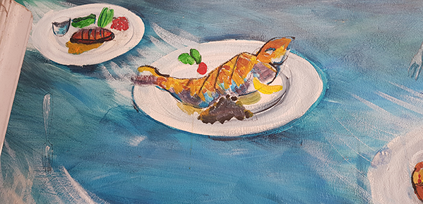

Historien
Klik for at læse mere
Oli-Bistro er en fransk inspireret Bistro beliggende på Mejlgade 41 i Aarhus’ skønne latinerkvarter. Bag stedet står franske Olivier Miens, der også er grundlægger og nuværende ejer af Bistroen. Olivier har stor erfaring med at drive en bistro, da han tidligere har været medstifter og -ejer af Oli-Nico, der også er beliggende på Mejlgade. Bistro byder på klassiske retter fra det franske landkøkken, som du kan sætte tænderne i til meget fordelagtige penge.
Lige fra Bistroen blev grundlagt d. 1. august 2013, har Olivé overtaget stedet efter en gammel slagterbutik og siden har vi haft fart på. Vi kalder stedet for en bistro i kontrast til en restaurant, fordi vores intention er ikke at skabe et sted hvor man sidder i flere timer og hænger over en halv kold café latte, men et meget hurtigere koncept hvor du kommer ind og spiser og når du er færdig er du på vej videre i det pulserende byliv. Vores koncept indbefatter enkelthed, kvalitet og god mad til byens bedste priser, som er vores mål og det synes vi også vi efterlever på allerbedste vis. I en travl og stresset hverdag er det rart med en oplevelse der er enkel og ligetil, men som ikke går på kompromis


Klik for at læse mere
Oli-Bistro, er en bistro med håndfaste og stærke værdier. Vi arbejder på at give vores gæster en unik oplevelse, både hvad angår unik fransk madoplevelse, afslappet miljø med plads til alle og betjening, som ikke er en generisk oplevelse. For os spiller værdier som god mad, af gode og friske råvare, til en god pris, en stor rolle. Derfor har vi også altid frisk fisk hver morgen og friske grønsager. Vi har importeret vin, håndlavet pommes fritter og meget mere ind fra frankrig for en større fransk oplevelse. Vi har indrettet Oli-Bistro med et strejf af afslappet fransk landstil med Indretningen af rødternede duge, små borde, rustikke stole, vinflasker på alle hylder og blafrende stearinlys som taget ud af Paris, og det lille sted tiltrækker alt fra forretningsrejsende til studerende.
For os handler det om at skabe en spændende kontrast og personlighed så du føler dig velkommen og afslappet når du besøger os.Vi er meget nysgerrige og vil gerne tilpasse os vores gæster og lære hvad god smag er for dem. Derfor har vi heller ikke udelukkende fransk mad på menukortet. Vi har derfor valgt at lave en nuanceret udgave af mad kortet, så det ikke er det franske køkken, som det ultimative men en unik madoplevelser som får dig til at komme igen, og igen.
Vive La France!